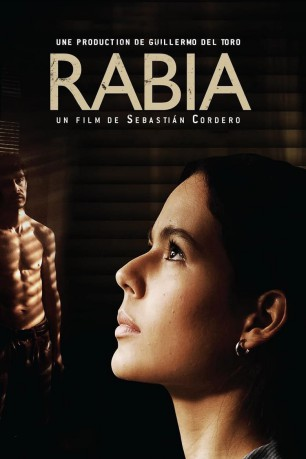

#8634 Rabia - Stille Wut
Alternativ: Rage (Englischer Titel)
 
 IMDB-Wertung: 6.5 / 10
IMDB-Wertung: 6.5 / 10  Metascore: 0
Metascore: 0 
José María, ein junger Bauarbeiter aus Südamerika, lernt zufällig das Hausmädchen Rosa kennen. Die beiden verlieben sich ineinander. Zunächst scheint alles perfekt, doch während eines Streits auf einer Baustelle erschlägt José im Affekt den Vorarbeiter.\r José muss flüchten und versteckt sich, um nicht entdeckt zu werden, in der Villa von Rosas Arbeitgebern. Völlig unbemerkt - richtet er sich in einem unbewohnten Seitenflügel des Hauses ein. Auch Rosa ahnt nicht, wohin ihr Geliebter geflohen ist. Innerhalb der kommenden Wochen und Monate beobachtet José Tag für Tag das Leben und die Obsessionen der Hausbewohner. Und muss auch mit absehen, was Rosa Schlimmes angetan wird …
Jahr: 2009
Dauer: 94 Minuten
FSK:
Land: Mexiko Studio: UFATonspuren: DTS - ,
Untertitel:
Auflösung: 1080p (1920x1080) Größe: 15974 MB
Genre: Thriller, Liebe
Regisseur: Sebastián Cordero
Drehbuch: Sergio Bizzio
Soundtrack: Lucio Godoy
Darsteller:
- Martina García als Rosa
 Gustavo Sánchez Parra als José María
Gustavo Sánchez Parra als José María- Concha Velasco als Sra. Torres
- Xabier Elorriaga als Sr. Torres
 Alex Brendemühl als Álvaro
Alex Brendemühl als Álvaro- Icíar Bollaín als Marimar
- Fernando Tielve als Esteban
- Anartz Zuazua als Fumigador
- Tanya De Roberto als Viviana
- Karlos Aurrekoetxea als Mecánico
- Yon González als Adrián
- Javier Tolosa als Capataz
- Alfonso Torregrosa als Policía 1
- Asier Hormaza als Policía 2
- Carmen Parra als Gemela 1
- Maria Parra als Gemela 2
- Jeremy Xabier Vargas als Joselito
Datei: X:\2009(N-Z)\Rabia - Stille Wut (2009, FSK, 1920x1080).mkv seit 25.03.2018
Festplatte: HD 2009(G-Z)-2010(A-F)
 Es gibt insgesamt 99 Filme in der Gruppe '2009(N-Z)'
Es gibt insgesamt 99 Filme in der Gruppe '2009(N-Z)'